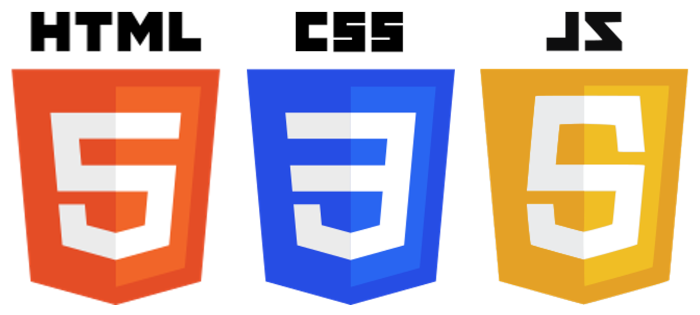

Olá queridos leitores, hoje dia 23 de fevereiro de 2024 escrevo o primeiro post do blog tecnologia é coisa de menina.E antes de dar início ao assunto peço desculpas pelos erros ortográficos que talvez encontrem. Mas como este é meu primeiro post ainda estou me aprimorando e estes serão corrigidos. Dando início ao assunto principal falaremos sobre três tecnologias que em conjunto formam toda a base do front-end. E no final daremos algumas dicas de materiais de estudo e carreira dev.

Inicialmente falaremos sobre o HTML5(Perverter Markup Language) e ao contrário do que todos falam por aí HTMlL não pode ser considerado uma linguagem de programação e sim uma linguagem de marcação. É o esqueleto do site, com html definimos o posicionamento de todos os componentes do site. Mas, somente com html temos as informações mas de uma forma feia, nada agradável aos olhos.
E neste cenário temos a entrada das CSS3(cascatding Style sheets) em português folhas de estilo em cascata o qual, é o grande responsável por deixar o site bonito. Aqui colocamos cores, fontes para as letras e tudo que deixará nosso site mais formoso, mais elegante. Neste momento temos uma linguagem de estilo e não de programação . E não estranhe se tratar css3 no feminino uma vez que se faz referência às folhas de estilo.
(Imagem de um site bem formatado e de um site só com html)
A única linguagem de programação desta tríade é o javascript o qual é o responsável pela interatividade do site. É com ela que temos os efeitos que tornam o site mais interativo com o usuário. É uma linguagem muito dinâmica pois, foi construída para trabalhar do lado do usuário. Mas têm sido usada com grande satisfação do loado do servidor.
Deste modo, html5, CSS3 e Javascript ,que nada tem a ver com java, mas isso é um assunto para outra postagem, formam a base do front-end que é a parte da frente do site , aonde o usuário interage tudo que se vê em um site foi programado por um programador front-end que por sinal é uma carreira bastante promissora. Visto que é um bom ramo para iniciar uma carreira no ramo da tecnologia contendo boas ofertas de vagas principalmente com o conhecimento de algum fremiwork.
E é isso na próxima semana em volto com mais um conteúdo para o nosso blog pois tecnologia é sim coisa de menina